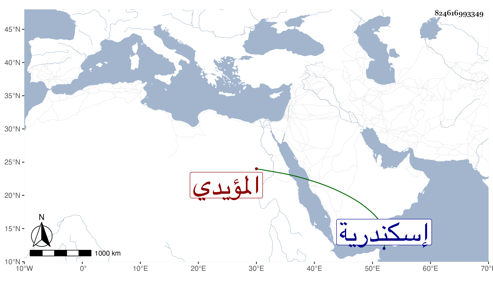

0902Sakhawi.DawLamic.ITO20230111-ara1.EIS1600.824616993349
Biography ID: 824616993349
563
فرج بن نائب الشام تنم المؤيدي ، ولد ببرج إسكندرية حين كان أبوه محبوسا به في الأيام الإينالية وقرأ القرآن وشارك في حرف كالنجارة والطبخ مع رمي النشاب ونحوه ، وكان نابها ، مات في ربيع الأول سنة ثمان وثمانين وهو شاب أمرد طري ابن ثلاث وعشرين فيما قيل وكان قد حج مع زوج أمه أزبك الخزندار أحد المقدمين في ذاك العام ورأيته هناك عوضه الله وأمه خيرا .
